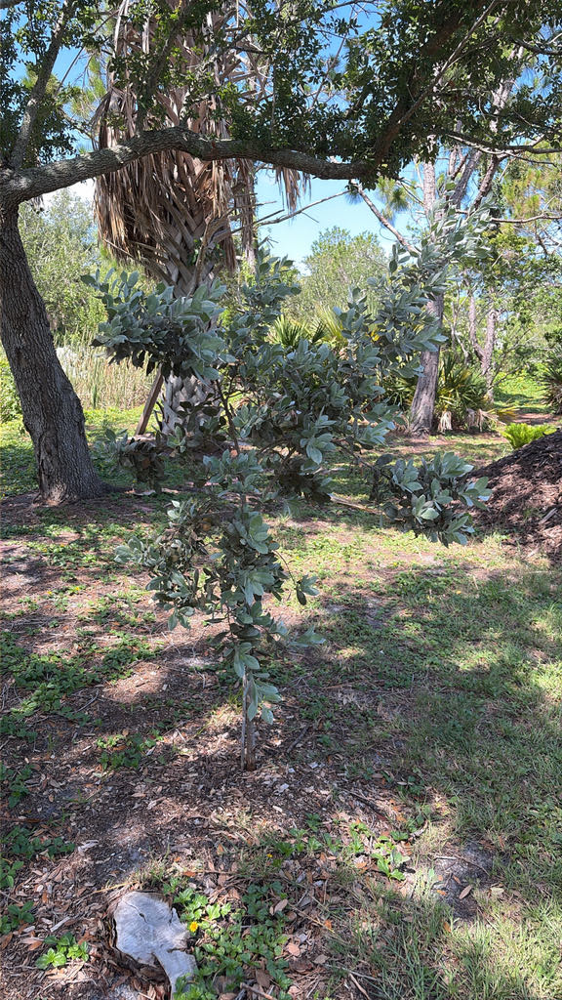

- Sometimes called Florida's fourth mangrove, Green Buttonwood isn't a true mangrove — but it commonly grows along the landward edge of mangrove forests, where salt, flooding and drier upland conditions meet.
- This tree has a salt-excretion system. Paired glands on the petiole near the base of the leaf blade can excrete excess salt, helping buttonwood tolerate salty coastal conditions. Look closely at the base of a leaf — can you find the two tiny glands?
- Green and silver buttonwood are forms of the same species, Conocarpus erectus. The silver form gets its shimmering appearance from dense silky hairs on its leaves, and plants can show intermediate degrees of hairiness.
- Buttonwood has been a coastal workhorse for centuries. Its dense, heavy wood was used for firewood, lumber, cabinet work and charcoal — and was especially valued for smoking meat and fish along Florida and Caribbean coasts.
Green Buttonwood is native to southern Florida and ranges widely through tropical and subtropical America — from Bermuda and the Bahamas through the Caribbean, Mexico, and Central America, and southward into South America, including the Pacific coast of Peru and the Atlantic coast of Brazil.
Its native range is unusually broad, extending across tropical America and across the Atlantic to western tropical Africa.
In Florida, it is a characteristic tree of the upper edges of mangrove swamps, tidal flats, coastal hammocks, and marl prairies — anywhere saline or brackish soils keep competition low. UF/IFAS records buttonwood along Florida's Gulf Coast as far north as the Bradenton area — so this isn't simply a Florida native. It is a native tree of our own coastal region.
It has been in cultivation in Florida landscapes for generations and is widely available from native nurseries.
- Despite growing alongside mangroves, Buttonwood is not a true mangrove. It belongs to the family Combretaceae, the same family as Florida's White Mangrove. Unlike the true mangroves around it, Buttonwood does not produce specialized mangrove propagules. Instead, its fruits develop into small, dry, cone-like clusters, and its seeds are dispersed primarily by water.
- Buttonwood and White Mangrove belong to the same plant family, Combretaceae; Red and Black Mangroves belong to different families. Ecologists sometimes call Buttonwood a mangrove associate rather than a mangrove proper.
- The glands at the base of each leaf petiole are extrafloral nectaries — structures that secrete sugary compounds outside the flower. Ecological research on Buttonwood has shown that ants visiting these glands are associated with reduced leaf damage, an example of a plant-insect relationship in which ants may help defend the tree against herbivores.
- Look for ants on the leaves: you may be watching that relationship in action.
- The tree's tolerance for difficult conditions is genuinely impressive: full salt spray, periodic flooding, long dry spells, compacted soils, and hurricane-force winds. That combination of salt tolerance, drought tolerance, wind resistance and tough wood helps explain why buttonwood is such a characteristic tree of Florida's difficult coastal environments.
- It is also one of the few Florida natives celebrated as a bonsai subject, where its naturally gnarled bark and small leaves translate beautifully at small scale.
The flower clusters — small and greenish, but produced nearly year-round — draw bees, butterflies, and other pollinators steadily through the warm months. The Florida Native Plant Society documents Buttonwood as a larval host for the Martial Scrub-Hairstreak butterfly and the Tantalus Sphinx moth, and as a nectar source for the Amethyst Hairstreak and other butterflies.
A larval host plant is where a butterfly or moth lays its eggs and where its caterpillars feed — supporting that life stage can be just as important to a wildlife garden as providing nectar for adults.
Beyond butterflies, the tree functions as a small-ecosystem anchor along the coast. Its rough bark and dense branching create surfaces and shelter used by insects, spiders and other small organisms, which can contribute to the food web supporting insect-eating birds.
Older specimens can become hosts for epiphytic bromeliads, orchids, and other plants that use the bark as an attachment surface — a mature tree can become a miniature vertical habitat in its own right.
Mature fruit heads release their small seeds, which are dispersed primarily by water. Both the green and silver forms can be propagated from both seed or cuttings.
Small, inconspicuous, and greenish to yellowish, the flowers are packed into tight, rounded heads arranged in branched panicles at or near the branch tips. They are not showy, but the clusters are numerous and flowers may occur throughout the year in Florida, with the most conspicuous production often during the warmer months.
The genus name Conocarpus comes from the Greek for cone fruit — an unusually literal botanical name for the compact heads it produces.
Tiny flowers are packed into rounded heads; after flowering, those heads develop into the larger, button-like fruit clusters. The cone-like heads persist after flowering and mature into small, purplish-brown to red-brown, button-shaped clusters roughly half an inch across. Their tightly packed scales give the fruits their characteristic appearance — and the common name buttonwood.
The small seeds are dispersed primarily by water.
Alternate, simple, lance-shaped to narrowly elliptic, two to four inches long with smooth margins. In the green form the surface is smooth and medium green. Look for two small glands on the upper side of the petiole near the base of the leaf blade — these are the extrafloral nectaries, and they are one of the features that distinguish this species.
Leaves on the silver form are covered in fine silky hairs.
Typically multi-trunked and low-branching, with drooping branches. Young bark is gray and smooth; with age it becomes dark, deeply furrowed, thick, and rough — sometimes dramatically twisted and gnarled on trees exposed to constant coastal wind.
Near the coast, that wind-sculpted form can become one of the tree's most recognizable and striking features, and makes it a favorite subject for bonsai practice.
Start at the base: look for a multi-trunked, low-branching silhouette with dark, furrowed, sometimes twisted bark. Move up to the branch tips where the rounded flower clusters hang in branched panicles — these can be present much of the year. Check the upper side of a leaf petiole near the blade for the two small glands that sit right at the junction.
If the tree is in fruit, the button-like brown cone clusters give the plant its name and are hard to miss. On older specimens, scan the bark surface for bromeliads or native orchids that have taken up residence in the crevices.
Conocarpus erectus does not appear on any standard toxicity list for people or pets. No specific toxicity to people, dogs, or cats was identified in the sources reviewed. The plant is not considered an edible landscape plant; its dense wood has historical uses including charcoal and smoking meat and fish — otherwise harmless.
The silver form — sometimes listed as Conocarpus erectus var. sericeus — is more commonly sold in the nursery trade than the green form, and is generally smaller and shrubby rather than tree-like.
The two grow together naturally, and plants with intermediate leaf color exist; the Atlas of Florida Plants notes that a full continuum of forms between glabrous green and silvery pubescent can appear even on a single branch. If you are sourcing Green Buttonwood specifically, confirm the form with your nursery.
Buttonwood has a long history as a bonsai subject in Florida, where its naturally small leaves, interesting bark, and tolerance for root restriction make it one of the most rewarding native species to work with at small scale.


- © Ruby Meador (CC-BY-NC), via iNaturalist